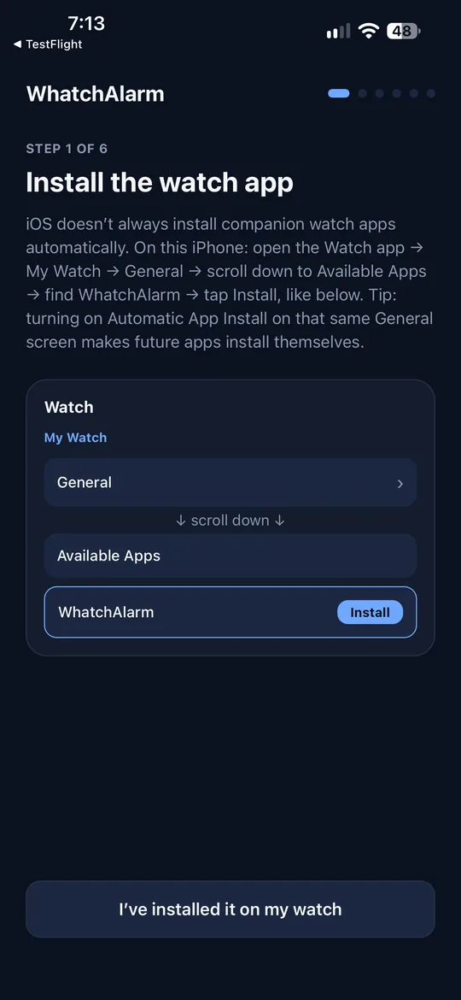
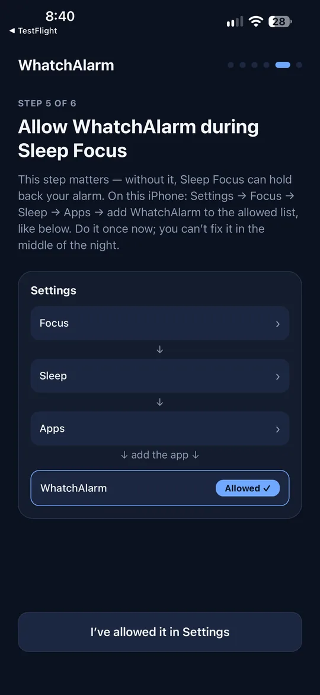
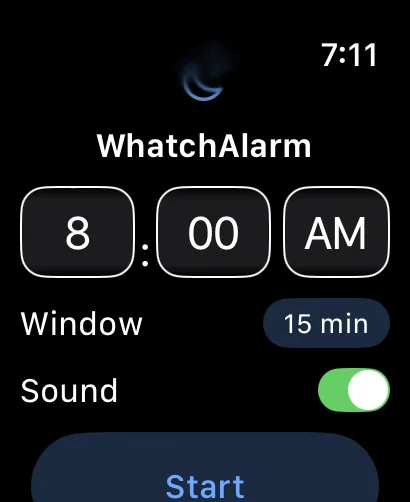
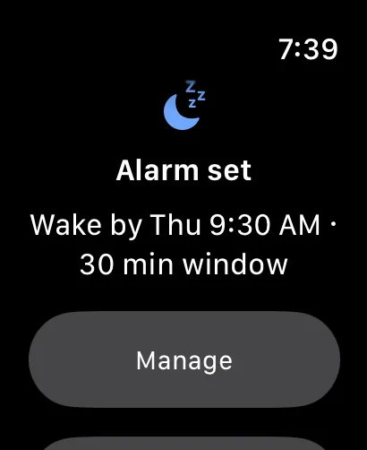

WhatchAlarm · Mode d’emploi
Configuration et mode d’emploi
WhatchAlarm est une alarme intelligente qui fonctionne sur votre Apple Watch. Vous choisissez l’heure la plus tardive à laquelle vous pouvez vous lever, et une fenêtre juste avant. Dans cette fenêtre, la montre guette un moment de sommeil plus léger — quand vous commencez déjà à bouger — et vous réveille à ce moment-là. Si elle n’en trouve pas, elle vous réveille exactement à l’heure choisie.
L’app iPhone sert de guide de configuration et permet l’achat. L’alarme elle-même vit entièrement sur la montre : votre iPhone peut rester dans une autre pièce, ou être éteint.
Les captures montrent la version anglaise de l’app ; dans le texte, les boutons portent leur nom français.
Ce qu’il vous faut
- Apple Watch sous watchOS 10 ou ultérieur
- iPhone sous iOS 17 ou ultérieur, jumelé avec la montre
- Environ cinq minutes pour la configuration ci-dessous
Faites-la une seule fois, le soir avant votre première nuit.
Configuration en cinq étapes
Les étapes 1, 3 et 4 se font sur l’iPhone, l’étape 2 sur la montre. Chacune ne se fait qu’une fois.
Installez l’app sur la montre
iOS n’installe pas toujours de lui-même les apps pour la montre. Sur votre iPhone :
- App Watch
- Ma montre
- Général
- faites défiler
- Apps disponibles
- WhatchAlarm
- Installer
Astuce : sur ce même écran Général, activez Installation automatique des apps pour que les prochaines apps de la montre s’installent seules.

Autorisez l’accès sur la montre
Ouvrez WhatchAlarm sur votre Apple Watch. La première fois, l’app demande trois autorisations — acceptez les trois :
Ces demandes apparaissent sur la montre, pas sur l’iPhone, parce que l’alarme fonctionne sur la montre. Sans elles, elle vous réveillera quand même à l’heure choisie, mais ne pourra pas chercher de moment plus léger.
Laissez passer WhatchAlarm en mode Sommeil
Cette étape compte : sans elle, la concentration Sommeil peut retenir votre alarme. Sur votre iPhone :
- Réglages
- Concentration
- Sommeil
- Apps
- sous Autoriser les notifications
- ajoutez WhatchAlarm


Activez le suivi du sommeil
La montre mesure alors votre fréquence cardiaque plus souvent la nuit. Sur votre iPhone :
- App Watch
- Ma montre
- Apps
- Sommeil
- Suivre le sommeil avec l’Apple Watch
La ligne Apps se trouve vers le bas de la liste Ma montre. Si vous voyez déjà vos données dans l’app Sommeil de la montre, c’est activé et il n’y a rien à faire.

Dormez avec la montre
Pendant la nuit, la montre capte vos mouvements et votre fréquence cardiaque — les signaux qui permettent à WhatchAlarm de distinguer le sommeil léger du sommeil profond. Vérifiez qu’elle est chargée avant de vous coucher.
Régler une alarme
Pour un matin


- Ouvrez WhatchAlarm sur la montre et tournez la Digital Crown pour choisir votre heure de réveil au plus tard.
- Touchez Fenêtre pour choisir combien de temps avant elle peut vous réveiller : 10, 15, 20 ou 30 minutes. 20 minutes, c’est un bon début.
- Son — laissez-le activé si vous voulez du son à la fin (voir Comment elle vous réveille).
- Touchez Démarrer. L’écran affiche Alarme réglée, le jour, l’heure et la fenêtre.
Pour l’annuler avant qu’elle sonne :
- Gérer
- Arrêter l’alarme
Chaque semaine : un programme
Sur la montre, touchez Programme en bas de l’écran principal. Activez les jours voulus, chacun avec sa propre heure. Sur un jour de semaine, Appliquer à Lun.–Ven. copie cette heure sur les cinq jours de semaine.
Une alarme programmée sonne d’elle-même ces jours-là. Pour sauter un seul matin, ouvrez WhatchAlarm quand cette alarme est réglée et touchez Gérer → Passer cette alarme ; le programme reste actif.
La partie intelligente demande un geste par jour
Apple ne permet à une app de montre de préparer sa session de nuit que lorsque l’app est ouverte à l’écran, et pas plus d’environ un jour et demi à l’avance. Donc :
- L’alarme elle-même sonne toujours — elle est réglée plusieurs jours à l’avance.
- La partie intelligente (chercher un moment plus léger) s’active dès que vous ouvrez WhatchAlarm dans la journée qui précède l’alarme. Arrêter l’alarme du matin sur la montre compte aussi, donc la plupart du temps vous n’avez rien à faire.
- Si un jour passe à la trappe, un rappel du soir vous invite à le toucher. Le toucher ouvre l’app, et cela suffit. Choisissez une heure où la montre est à votre poignet, pas sur le chargeur :
- Réglages
- Rappel du soir
Comment elle vous réveille
En douceur quand c’est possible, fermement quand il le faut. Tout dépend : la montre a-t-elle trouvé un moment plus léger ?
Moment plus léger trouvé
Réveil anticipé : en douceur
Vous êtes déjà près de l’éveil, alors elle commence par des tapotements au poignet qui s’intensifient pendant trois minutes. Vous dormez encore ? La vibration monte jusqu’à l’intensité choisie dans Réglages → Intensité du réveil (Douce, Normale ou Forte). Pas de son à ce stade.
Si vous ne l’avez toujours pas arrêtée à l’heure choisie, elle passe au réveil à pleine puissance.
Heure choisie atteinte
Heure limite : pleine puissance
Pas de montée en douceur — le temps est écoulé. La vibration la plus forte de la montre, sans pause, dès la première seconde. Deux minutes plus tard, le son s’y ajoute, jusqu’à ce que vous l’arrêtiez.
Quand elle commence directement par le son
La montre ne peut vibrer pour WhatchAlarm que pendant la session de nuit de l’app, et Apple limite cette session à environ 30 minutes. Avec une fenêtre de 30 minutes, toute la session sert à chercher un sommeil léger et se termine pile à l’heure choisie ; ensuite, l’app ne peut vous réveiller qu’avec des notifications, d’où le son immédiat. C’est pareil si vous n’avez pas ouvert WhatchAlarm sur la montre dans la journée qui précède l’alarme : il n’y a alors aucune session de nuit.
Pour avoir d’abord la vibration, gardez une fenêtre de 20 minutes ou moins.
Son et mode silencieux
Le son demande deux choses : Son activé dans WhatchAlarm, et la montre hors du mode silencieux (la cloche dans le Centre de contrôle de la montre). En mode silencieux, l’Apple Watch ne laisse aucune app émettre de son — pas même l’alarme d’Apple —, WhatchAlarm vous réveille donc uniquement par vibration.
L’arrêter
Touchez Arrêter dans WhatchAlarm, ou touchez la notification de l’alarme.
Votre prochaine alarme sur le cadran
Ajoutez la complication WhatchAlarm pour voir votre prochaine alarme d’un coup d’œil. Maintenez le doigt sur le cadran, puis :
- Modifier
- choisissez un emplacement
- WhatchAlarm
- Prochaine alarme
Elle affiche l’heure et le jour de votre prochaine alarme. Sans alarme réglée, elle affiche Non. Sur les grands emplacements, elle indique aussi si la partie intelligente est active ; Touchez pour activer signifie que ce n’est pas encore le cas — un toucher ouvre WhatchAlarm et l’active.


Réglages sur la montre
- WhatchAlarm
- Réglages
- Format de l’heure
- Automatique, 12 heures ou 24 heures.
- Intensité du réveil
- La fermeté avec laquelle un réveil anticipé continue après les premiers tapotements : Douce, Normale ou Forte. À l’heure choisie, le réveil est toujours à pleine puissance.
- Rappel du soir
- Activé ou non, et son heure.
- Diagnostic
- Un journal de ce que l’alarme a fait et pourquoi. Il reste sur la montre tant que vous ne touchez pas vous-même Envoyer le journal — pratique si vous nous contactez pour un problème.
Historique, sur l’écran principal, montre vos deux dernières semaines : quand elle vous a réveillé, et si c’était en avance (mouvement ou fréquence cardiaque) ou à l’heure choisie.
Essai gratuit et achat
WhatchAlarm est gratuite pendant 14 jours, tout compris. Ensuite, un achat unique la débloque définitivement — pas d’abonnement, rien ne se renouvelle.
Achetez-la quand vous voulez dans l’app iPhone :
- Guide de configuration et réglages
- Achat
Déjà achetée, sur un nouveau téléphone ou après une réinstallation ? Touchez Déjà acheté ? Restaurer l’achat. L’app vous indique toujours le résultat :
- Achat restauré — l’app est débloquée.
- Aucun achat trouvé — le compte App Store de cet iPhone n’a pas acheté WhatchAlarm. Connectez-vous avec l’identifiant Apple utilisé pour l’achat (Réglages → votre nom → Contenu multimédia et achats) et réessayez.
- Restauration impossible — l’App Store n’a pas répondu. Vérifiez votre connexion et réessayez.

L’alarme ne vous réveille pas ?
Vérifiez dans cet ordre.
- WhatchAlarm est autorisée dans Réglages → Concentration → Sommeil → Apps (étape 3).
- La montre était à votre poignet et chargée.
- L’alarme était réglée (Démarrer) ou programmée sur la montre.
- L’accès a été autorisé sur la montre elle-même (étape 2).
- Pas de son ? La montre est sans doute en mode silencieux — c’est normal, elle vous réveille par vibration.
Confidentialité
WhatchAlarm n’a ni compte, ni serveur, ni outil d’analyse, ni publicité. Votre fréquence cardiaque et vos mouvements sont lus sur la montre, utilisés sur la montre, et ne la quittent jamais.
Politique complète : Politique de confidentialité. Questions : contact@nghive.app